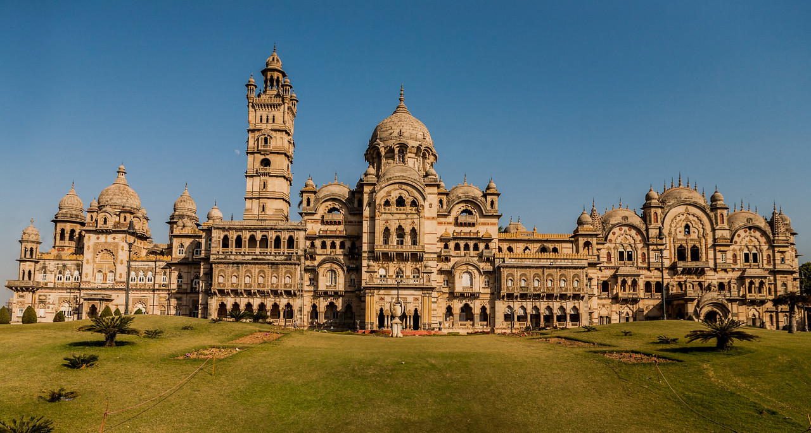
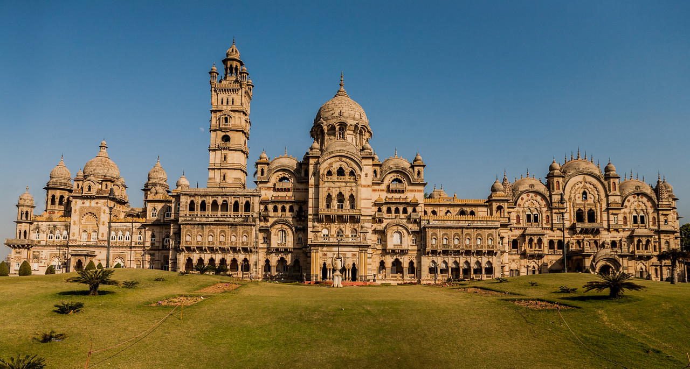

Ahmedabad
Ahmedabad, in western India, is the largest city in the state of Gujarat. The Sabarmati River runs through its center. On the western bank is the Gandhi Ashram at Sabarmati, which displays the spiritual leader’s living quarters and artifacts. Across the river, the Calico Museum of Textiles, once a cloth merchant's mansion, has a significant collection of antique and modern fabrics.

 
